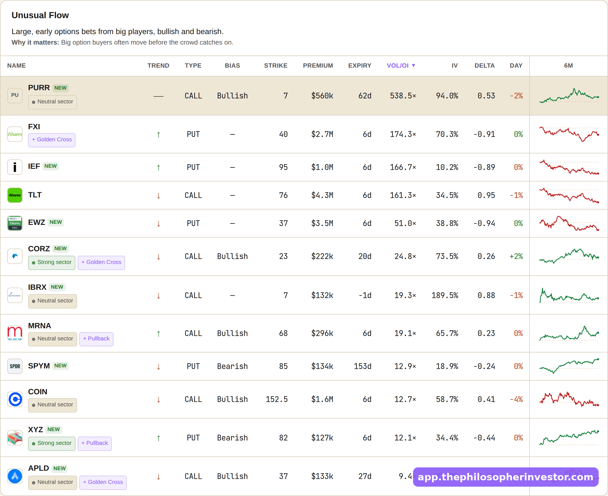
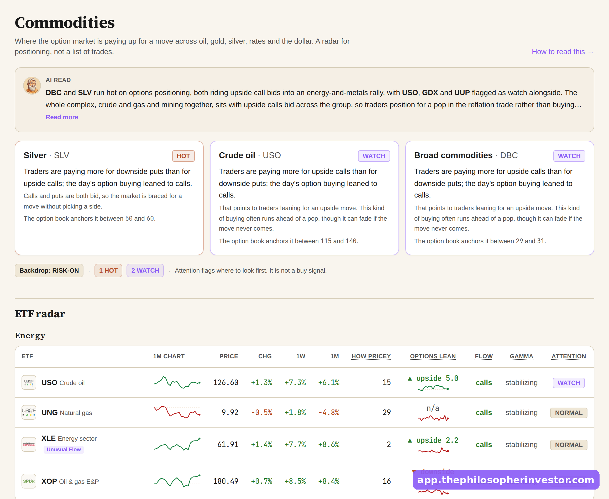
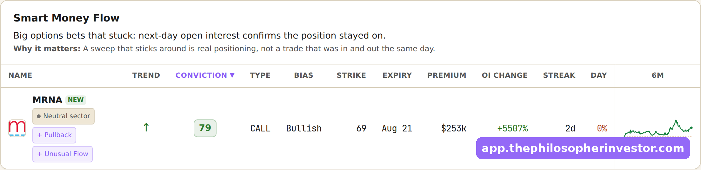

Email 2, l'objection franche (version longue)
La V1 itérée : plus longue, 4 captures, une 4e objection (le risque), et la deadline du 19 appuyée pour pousser à agir. Toujours zéro claim, zéro preuve inventée, zéro re-tour des onglets. Répond à « c'est juste un screener, je paie pas $100 » et lève les freins un par un. Même voix et même offre que l'email 1.
https://philosopherinvestor.substack.com/6d349d41. Envoi conseillé : mer 9 ou jeu 10 juil, à toute la liste. Aucun chiffre de perf : rien à revérifier côté données.
Email 2 · à envoyer reco
Daniel prend la place du lecteur qui n'a pas cliqué et lève 4 freins un par un (screener / pas le temps / c'est pour moi ? / et si je me trompe ?), captures à l'appui, assume les limites, puis appuie sur la deadline du 19. Honnête de bout en bout, aucune donnée qui puisse être fausse.
A: If you have not clicked yet, this is probably why
B: The honest answer to "it's just a screener"
C: Everything holding you back, answered before Sunday
The app went live on Sunday, and plenty of you opened that email, read the whole thing, and did not click. I understand why. So instead of selling you again, let me do something more useful. Let me sit in your chair and answer the real reasons you are holding back, one at a time, honestly, including the ones where you might be right.
There are four, and I have heard all of them.
1. "It looks like a screener, and I already have one."
This is the big one, and it is fair, so let me be precise about the difference. A screener hands you a list of tickers that match a filter, and then it stops. Everything that actually decides whether you make money happens after that list, and you are on your own for all of it: pull the chart, find the levels that matter, work out which funds are in the name and whether the options money agrees, check if the sector is with you or against you, size the trade so one bad call does not hurt, set the stop, and then remember to watch it. That is the real job, and it is the part that used to eat my evenings, name by name, for two years.
The app does that job. Open a name and the case is already built on one screen: the two scores, the levels drawn including the one that tells you the trade is wrong, and a read written out that leads with where it could be off.
[ IMAGE 1 ]
Scroll a little and the money is already sitting there too, the part you would normally chase across five tabs. Which funds are adding and which are cutting. Where the options premium is leaning. Whether insiders have been buying their own stock.
[ IMAGE 2 ]
So it is not a longer list. It is the work after the list, done for you, so the only thing left is your decision. That is the whole reason I built it instead of buying a screener like everybody else.
2. "I do not trade enough to justify it."
Most people who read me do not trade much, and it still earns its keep for them, because you are not paying to trade more. You are paying to trade better on the few you do take, and to stop flying blind the rest of the time. You open it to read the whole market in about thirty seconds before the bell, so you know which way the money is moving before you risk a dollar.
[ IMAGE 3 ]
And the names worth a look are already ranked and waiting, so you start from a short list instead of a blank search box and a coffee going cold.
[ IMAGE 4 ]
If it keeps you out of one bad entry a quarter, it has paid for the whole year. The rest of the time it sits there, ready, and costs you nothing to leave alone.
3. "Is it really for me?"
Here is who it is for, plainly. Someone who trades their own account, reads this newsletter, and would rather spend their edge on decisions than on data entry at midnight. If what you want is tips to follow blindly, this is the wrong tool, and I would rather lose the sale than pretend otherwise. It hands you the work and the read. You keep the judgment and the call. And I will not oversell the rest: it does not print money, it misses on plenty of names, and every read tells you where it might be wrong. That is the honest deal, and I would rather you know it going in.
4. "What if I sign up and it turns out not to be for me?"
Then you cancel in one click, from your own account, and it stops there, no lock-in and no phone call. I will be straight with you: the founding deal is a year paid up front, so it is not zero risk. But it is $100, less than one trade gone wrong, for something you can lean on every morning for a year. And if committing to a full year sight unseen is the worry, there is a monthly option, so you can start small and stop whenever you like. That is as small as I know how to make the risk.
So if one of those four was the thing in your way, I hope it is clearer now. And if it was something else entirely, hit reply and tell me. I read every one, and it is how the app gets better.
One last thing, because it is true and I would rather you hear it from me than miss it. The founding price is only open until Sunday, July 19. 50% off your first year, $100 instead of $200. After Sunday it goes to $200 a year, and the founding rate does not come back. If you have been on the fence, this is the week it actually costs you something to wait.
[ BUTTON: Claim the founding price → https://philosopherinvestor.substack.com/6d349d41 ]
You can cancel any time, in one click. So the risk is small, the door is open, and it closes Sunday.
Daniel
P.S. Still not sure? Open one name you know cold and see whether the app tells you something you did not already have. It takes two minutes, and that answer is worth more than anything I can write here. The founding price ends Sunday, July 19.
Captures (les moins vues : elles étaient sur le hub, pas dans l'email 1) : [1] la name page, autre ticker que NVDA (le dossier déjà monté) · [2] un board options flow (la money déjà remontée) · [3] Sectors / macro radar (le marché lu en 30s) · [4] un board flow confirmé (la short list déjà rankée). Encore mieux : re-shoote 1-2 captures fraîches dans l'app live (Cmd+Maj+4) pour du 100% neuf.
If you looked at the app and thought "nice, but it is basically a screener," here is the honest answer.
A screener hands you a list and leaves the real work to you: the levels, the funds in the name, the sector, sizing the trade. The app does that part, so you open a name and the case is already built. The work is done. All that is left is your call.
Founding price, half off year one, until July 19. After Sunday it goes back to full price.
Visuels · à glisser aux marqueurs



